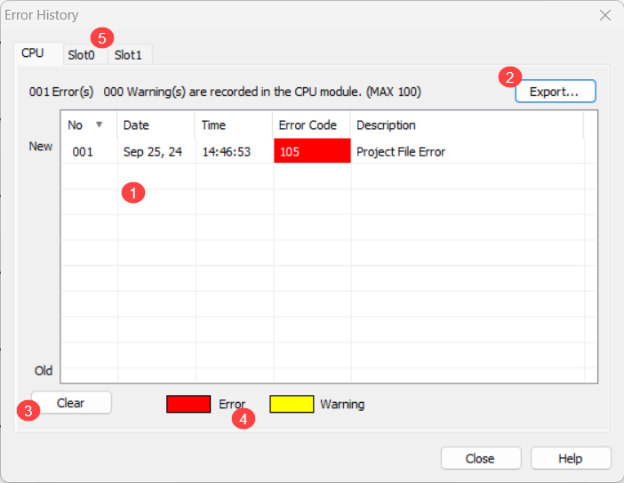
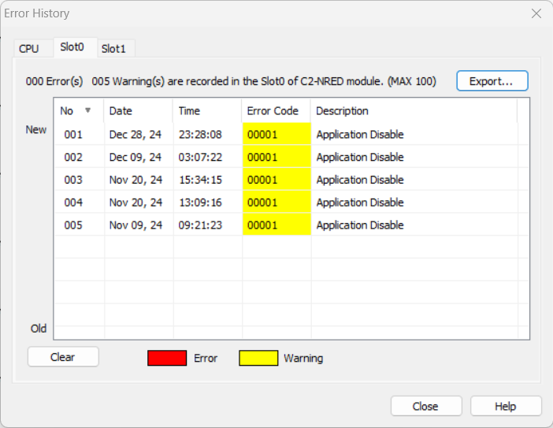

Topic: CL093

| Error History |
Topic: CL093
|
The Error History list displays error information storedin the CPU and in each available slot in a CLICK PLUS PLC. This dialog is only available when Connected to the PLC. Selecting Error History from the PLC Menu, opens the Connect dialog if you are not currently Connected to the PLC. The Clear button erases all entries on the list. To retain a copy of the Error History click on Export to create a spreadsheet that can be read in Excel.


1 Error History List: The Error History list gives the Number, Date, Time, Error Code, and Description for each error. Up to 100 errors can be retained in the CPU.
2Export:Click the Export button to create a file that can be read in Excel.
3Clear:Click the Clear button to erase the list of errors from CPU memory.
4 Error and Warning: Errors are usually accompanied by an Error Indication on the CPU. The "ERR" LED will turn ON in response to Critical Errors. However, some Critical Errors that prevent communications with the CPU (such as a corrupt or missing firmware file) cannot be displayed on the Error History list.
5Processor:If using a CLICK Plus PLC, there will be one or two tabs to show the errors for each Intelligent Module in the CLICK Plus Slots.
If using the "Classic Mode" in the Programming software, to open the Error History list, select Error History from the PLC Menu.